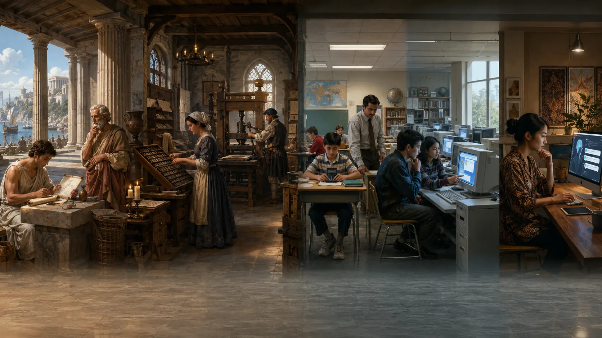
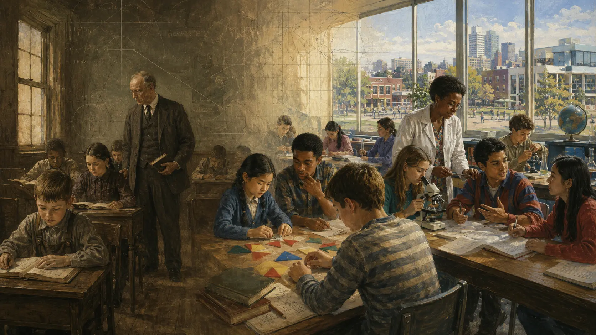

Tulisan
Apakah kita jadi mudah lupa?
Kekhawatiran tentang tulisan dan ingatan dibahas dalam Phaedrus, karya Plato.
Sharing session
01 · Pertanyaan pembuka
Apa yang berubah ketika sebagian pekerjaan kita dibantu AI?
Siapa yang sudah memakai AI untuk pekerjaan sehari-hari?

02 · Perubahan yang kita rasakan
MenjelaskanMenjelaskan cara memakai rumus Excel.
MengerjakanMembuat rumus Excel, lalu mengecek dan memperbaiki hasilnya.
AI membantu mengerjakan. Kita tetap perlu tahu hasil seperti apa yang dibutuhkan.

03 · Kekhawatiran yang sudah lama ada
Tulisan
Kekhawatiran tentang tulisan dan ingatan dibahas dalam Phaedrus, karya Plato.
Kalkulator
Organisasi guru matematika NCTM menekankan bahwa kalkulator harus membantu siswa memahami matematika.
Internet
Peneliti mempelajari apa yang kita ingat ketika informasi bisa dicari lagi.
Kekhawatiran seperti ini bukan hal baru. Namun, dampak AI tetap perlu kita pelajari.
04 · Fokus diskusi kita
01Apakah kita paham jawaban AI yang kita pakai?
02Apakah kita masih melatih kemampuan yang dibutuhkan?
03Apakah AI membantu kita bekerja lebih cepat dan tepat?
05 · Bedakan IQ dan penggunaan AI
Penelitian di Norwegia yang terbit pada 2018 membahas skor IQ pria yang lahir pada 1962–1991.
Yang diteliti adalah perubahan skor IQ dari generasi ke generasi. Penelitian ini tidak menguji dampak pemakaian AI seperti ChatGPT.
Lalu, apa yang ditemukan dalam penelitian tentang orang yang memakai AI?
06 · Risiko saat menerima hasil AI
319 pekerja
Peserta yang lebih percaya pada AI melaporkan lebih sedikit usaha untuk menilai jawaban AI.
Ini berdasarkan cerita peserta tentang kebiasaan mereka, bukan hasil tes kecerdasan.
07 · Belajar dengan bantuan AI
AI yang memberi bantuan seperti chatbot biasa
Saat ujian tanpa AI, nilainya lebih rendah daripada kelompok yang belajar tanpa AI.
AI yang dirancang untuk membimbing belajar
Dibanding chatbot biasa, penurunan nilai saat ujian tanpa AI banyak berkurang.
Kalau ingin menguasai caranya, kita tetap perlu latihan mengerjakan sendiri.
08 · Manfaat yang sudah diteliti
+15%
rata-rata masalah pelanggan
yang diselesaikan per jam
Peneliti mempelajari pekerjaan 5.172 petugas layanan pelanggan saat perusahaan mulai memakai asisten AI.
Pekerja yang belum banyak pengalaman mendapat manfaat lebih besar.
AI membantu dalam pekerjaan ini. Besar manfaatnya bisa berbeda pada pekerjaan lain.

09 · Jawaban atas pertanyaan pembuka
Saat belajar, cek apakah kita sudah paham.
Saat bekerja, cek apakah hasilnya benar dan berguna.
Memakai AI tidak otomatis membuat kemampuan kita berkurang. Kemampuan yang kita butuhkan tetap perlu dilatih.
10 · Sesuaikan bantuan dengan kebutuhan
Kalau saya ingin belajar caranya
“Jelaskan rumus ini, beri satu contoh, lalu biarkan saya mencoba soal berikutnya.”
Cek: bisakah saya menjelaskan dan memakai rumusnya?
Kalau saya ingin menyelesaikan rekap
“Gabungkan data ini sesuai kolom yang saya tentukan. Tandai data kosong dan baris yang duplikat.”
Cek: apakah semua file terbaca dan totalnya cocok?

11 · Kapabilitas AI saat ini & Menuju AGI
Lompatan model saat ini
Model seperti GPT-6 Astra mampu bernalar mendalam (deep reasoning), merancang kode arsitektur bertingkat, hingga membangun aplikasi/game 3D WebGL interaktif secara mandiri.
Refleksi masa depan
Ketika sistem mampu memecahkan masalah baru dan beradaptasi tanpa panduan kaku di setiap langkah, wacana Artificial General Intelligence terasa makin nyata di depan mata.
Semakin mandiri kapabilitas AI, semakin krusial peran kita sebagai penentu arah, penguji logika hasil, dan pemegang keputusan akhir.
12 · Contoh: mempercepat rekap laporan
Pekerjaan awal
Setiap bulan, data di-copy paste satu per satu ke tabel rekap.
Alat yang ingin dibuat
Hasilnya: tabel rekap, daftar file yang berhasil dibaca, dan tanda untuk data yang kosong.
Pekerjaannya tetap membuat rekap. AI membantu membuat alat agar kita tidak perlu copy paste satu per satu.
13 · Mengecek aplikasi yang dibuat
Lanjutan contoh rekap
Rekap bisa terlihat rapi, tetapi datanya belum lengkap.
Cek fileSepuluh file berhasil dibaca.
Cek perhitunganTotalnya sama dengan hitungan manual.
Cek pesan errorFile yang gagal dibaca ditandai.
Karena kita tahu pekerjaannya, kita bisa menentukan bagian mana yang perlu dicek.
14 · Saat aplikasi mulai dipakai tim
Jelaskan apa yang dibutuhkan.Pekerjaan apa yang ingin dibuat lebih mudah?
Coba bersama tim.Apakah aplikasinya menghemat waktu? Apakah hasilnya benar?
Libatkan IT saat diperlukan.Bahas tempat menyimpan data, siapa yang boleh mengakses, backup, dan siapa yang memperbaiki jika ada masalah.
Semakin banyak orang bergantung pada aplikasi, semakin penting ada yang mengurusnya.

15 · Langkah pertama
16 · Penutup dan diskusi
AI membantu mengerjakan. Kita menentukan yang dibutuhkan, mengecek hasilnya, dan memutuskan apakah hasil itu bisa dipakai.
Pekerjaan berulang apa yang ingin kamu buat lebih mudah?